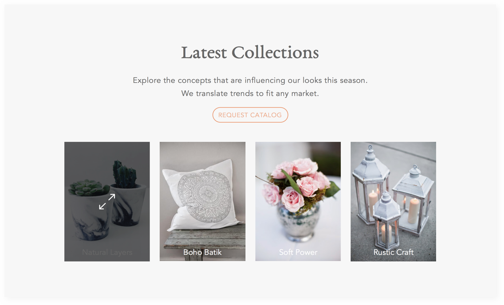
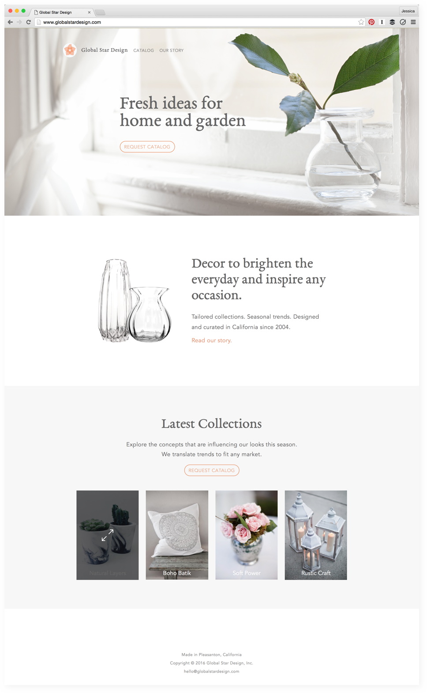
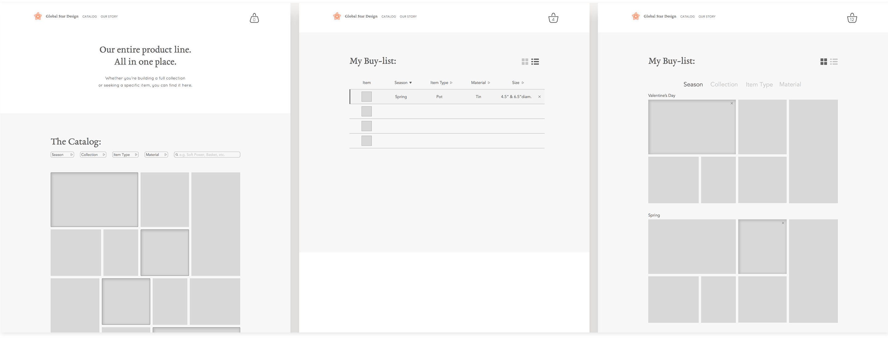
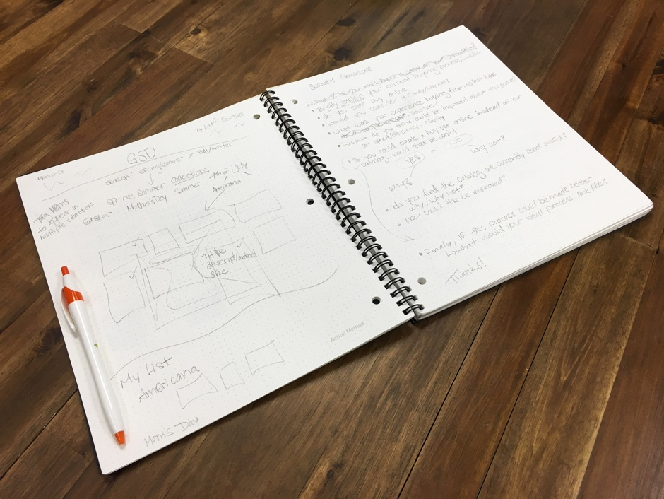
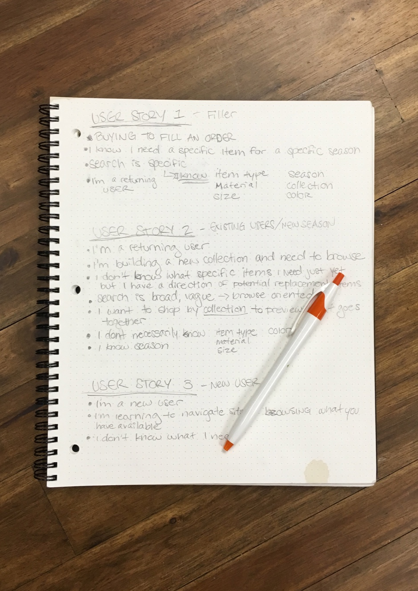

GSD Website & Catalog
to ensure a solid visual feel for our products without sharing too many designs. The in progress catalog portion will include our entire line, but will only be viewable by customers. See it live at globalstardesign.com

Trends and connecting through empathy
We design our product line into several seasonal collections. In the beginning of our process, we develop a palette for each trend and broaden each core concept into several materials. This allows us to really hone in on the strongest elements of each collection.
Our process is such a root aspect of GSD and we felt it critical to share a bit on how we think about trends to better connect us to current, and new customers. As shown, clicking on one of the images in Latest Collections offers a visual and written explanation of how we might translate these trends.
What sets GSD apart and prevents our buyers from selecting product straight from the factory is our curation and our development of collections. Because we research the trends, our customers don’t have to. After posing questions about this section with some of our current buyers, they loved the opportunity to better understand how we put collections together, and had more enthusiasm for our products because of it.



Understanding the catalog
Bringing our catalog online is a huge aspect of the entire site, hence being the foremost call to action.
Currently, we soley print and hand bind our catalogs. We do so biannually and create custom ones for each of our clients. This is clearly inefficient on the design end, but this process also effects operations and perhaps most importantly, our buyers.
We spend countless hours on tedious customizations to cater to our buyers’ specific needs and uniquely desired looks. While this is great in some respects, it becomes a huge bottleneck as the production turnaround grows. It is also cumbersome for our buyers when they relay the items they’re interested in. The only way to communicate the products they want today is for them to call us and run through their selected items page by page. Yes, this is painful to type.
Dividing the problem into smaller parts
This transition to a digital catalog is crucial to get right. With much more research and many more iterations than the static site, I really wanted to break these problems up.
My first goal was to update and build the static pages in order to ship value quicker. I researched for the catalog in the interim, and am currently iterating on wireframes.

Catalog problems to tackle
- How can I streamline buying from GSD to make the workflow more efficient?
- How can I appeal to multiple use cases by making sure they can view the catalog in a way that suits their needs?
- How can I maintain customization and unique collections for various price points and client preferences?
The audience
Our buyers are my primary concern. They build entire collections to fill their shelves and replenish or restock gaps in their product line.
I posed surveys and interviewed several of our current buyers. I wanted to provide a way for them to shop or query our product online in a format that was unattainable in print. There was clearly ample opportunity for this. Because of the several different reasons for buying, I began to categorize filters that best addressed their potential and actual needs.
Overcoming print limitations
I created several use cases for the catalog in order to better define how to approach layout and filtering options.
Allowing our customers to search by collection helps them visualize ways they can set their store for a season. In this way they can better view what goes well together all at once. Other users seek to merely fill gaps in collections they’ve already built. Their need could be better met if a buyer had the option to sort our product by item type or material.
Accounting for several use cases was a problem we couldn’t previously solve in print. With each printed catalog we were forced to choose one layout option and typically opted for spreads by seasonal trend or seasonally by material. From the feedback I’d received, this had previously been incredibly limiting for GSD, and sometimes confusing and/or frustrating for our buyers.


Future challenges
One of the challenges I’m still working on is customization. I’d love to create personalized collections catered to trends our individual customers develop. One of the problems with this is that it depends on our customers already doing that trend work and creating that vision. If they don’t, we may look to create trends specific for their market in the future.
I’m really excited to continue to develop this portion of the site and create more opportunities for GSD.